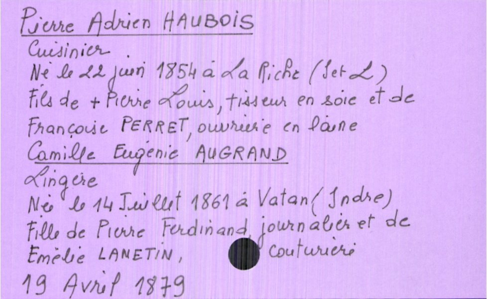
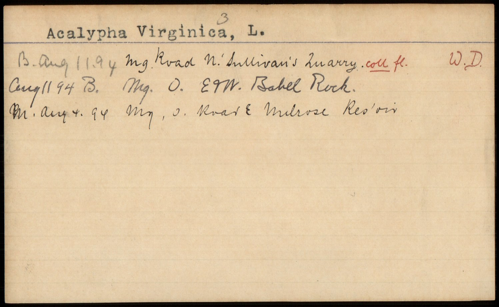
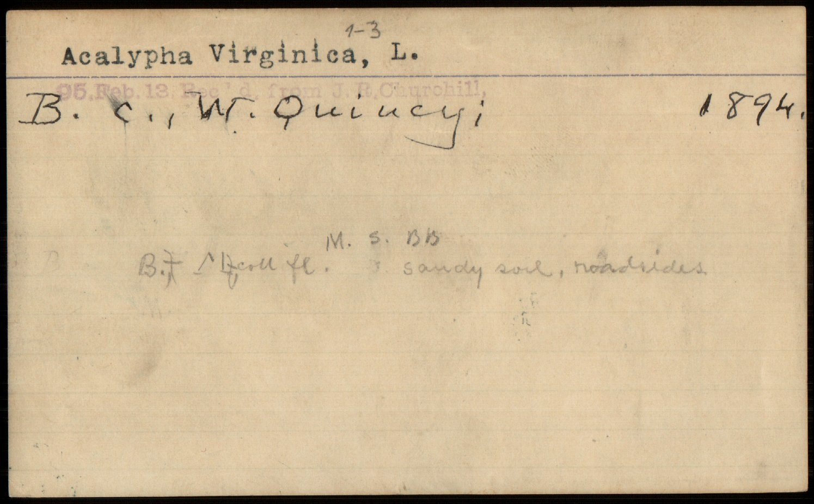

Is fine-tuning small models worth it? Structured extraction from index cards
Fine-tuning one open 4B model to read several archival card collections, each with its own schema — and still follow schemas it has never seen.
tl;dr: You can fine tune a small specialised information extraction model to work even better with a specific domain (archival index cards) and still have it generalise to unseen schemas. The model is cheap to train, and the bottleneck is labelled data, not model size. A shared corpus of labelled cards across institutions could unlock a strong, open 4B model that any library can point at its card drawers.
Is it worth fine tuning small models still?
In 2026 the default answer to many tasks is to reach for a big frontier model. There are many who say “fine tuning is dead”. On the other hand, there has been growing interest in small models that can be deployed locally. Gemma 4, for example, has been very popular for providing models that can be run on device across accessible hardware. Whilst smaller models are getting more and more capable I think there is an area where they are still massively under explored, what I am calling “task-generalist” models (better name welcome!). These are models that are small and work on a specific targeted task i.e. information extraction from document images, but still general purpose i.e. aren’t fine tuned to a specific set of labels.
This class of model is small enough to deploy locally and scale to very large collections but is general purpose enough that they may work out of the box for many tasks and domains. They also however offer the scope for fine tuning.
And because the base model already understands the task (turning a document image into JSON), fine-tuning it for your own material means adapting it, not training from scratch — which keeps it cheap. So the question isn’t whether to reach for a frontier model. It’s whether you can take one of these small, open, task-generalist models, fine-tune it on a few real collections, and get something that reads your material better without turning it into a narrow specialist. And whether it’s cheap enough that a small team, or one person with an agent, can do it. This post tests that on a shared but unglamorous problem: archival index cards.
OCR or structured extraction?
VLM based OCR models have got much better in the past year or so but there are many cases where you actually want some structured data from a document stored as an image (i.e. non machine readable). This use case is relevant in many domains. In the GLAM (Galleries, Libraries, Archives, Museums) sector, many collections are stored as images of index cards. Many of these are still not in other systems and the only source of this information is the card itself. The same is true in other domains, for example in natural history collections where specimen cards are still used to store information about a specimen. In these cases, you want to extract structured data from the card image, not just the text.
NuExtract-3
NuExtract-3 takes an image plus a schema (the list of fields you want) and hands back JSON — no bounding boxes, no layout rules, no separate OCR step. Here is one card and the record that comes back:
{
"name": "Abercrombie, John",
"date_of_death": "June 19, 1927",
"cause_of_death": "Coronary sclerosis",
"age": "70 yrs. - 18 days",
"occupation": "Baker",
"birthplace": "Glasgow, Scotland",
"place_of_burial": "Everett, Mass."
}Everything below is about making that work better on a specific type of data (index cards) — and keeping it good at working on collections it has never seen.
A while back I showed that NuExtract-3 could turn catalogue-card images into structured JSON zero-shot. In that post I suggested the model is a very strong zero-shot model for a first pass (and may be good enough in many cases) but the real win would be a small model fine-tuned for a specific collection.
This post picks up on this topic. The question I wanted to answer: can one cheap, open 4B model be fine-tuned to read many different card collections very well — each with its own schema — without becoming a brittle specialist? And if so, does it stay useful on collections it was never trained on?
The collections
I trained and evaluated on three real archival collections, deliberately chosen to be different from each other — different institutions, languages, layouts, and record types:
| collection | what it is | language | ground truth |
|---|---|---|---|
| Teklia DAI-CReTDHI | vital-records index cards, Archives of Tours | French, handwritten | expert (MIT) |
| NLS Advocates Library | manuscript-catalogue cards | English, typed/handwritten | cataloguer-reviewed |
| Southborough vital records | town-clerk death cards (MA) | English, handwritten | silver (model-labelled) |
Plus a fourth, the Duke Rubenstein manuscript catalogue, held out entirely i.e. never trained on to test whether the model follows a schema it wasn’t trained on before (and if we broke the zero shot generality of the base model).
Three of the four, side by side — different institutions, languages, and layouts:

Each collection wants a different shape of record. A death card has name / date_of_death / cause / age / birthplace; a manuscript card has heading / heading_type / entries[ms_no, folios, ...]. The model is told the schema at inference and fills it in — the same template mechanism NuExtract-3 ships with, just made better at these materials.
What domain adaptation buys you
Start with the hardest collection — Teklia’s French handwriting. Zero-shot NuExtract-3 scores 0.24 field-F1.1 After LoRA fine-tuning on ~430 cards (about 10 minutes, ~$2):
| Teklia (French handwritten deaths) | field-F1 |
|---|---|
| NuExtract-3 zero-shot | 0.24 |
| + fine-tuning | 0.89 |
That jump — 0.24 → 0.89 is the pitch for small fine-tuned models. The model learns the routing, the role structure, and (easy to miss) the collection’s surface conventions: how it writes dates, month names, and abbreviations. On the French cards that means the period’s own shorthand — old forms like Xbre for décembre, or a surname written first in capitals — exactly the kind of detail a zero-shot model has to guess at and a fine-tuned one simply learns. Cheaply, on one consistent card series, you go from “interesting demo” to “genuinely usable first pass.”
One model, many schemas (for free?)
The interesting question is whether you can fold several collections into one model without it forgetting the others. It seems you can. Training a single model on all three collections at once:
| collection | metric | single-collection | one generalist model | external reference |
|---|---|---|---|---|
| Teklia (FR deaths) | field-F1 | 0.889 | 0.878 | — |
| NLS (manuscripts) | retrieval | — | 0.726 | Qwen3-VL-8B 0.760 |
| NLS (manuscripts) | ms_no F1 | — | 0.952 | Qwen3-VL-8B 0.886 |
| Southborough (EN deaths) | macro-F1 | — | 0.750¹ | new collection |
¹ The Southborough test set is agent-labelled, not human-verified (a Claude agent read each card carefully) and small (12 cards) — so 0.750 is relative to those labels, not gold ground truth. Teklia and NLS numbers are against human-grade ground truth.
Two things stand out. First, adding collections is nearly free: Teklia held at 0.878 (vs 0.889 trained alone). Second — and this is the one that surprised me — on the manuscript-number field, the most important field for actually finding a manuscript, the 4B model scores 0.952, beating the Qwen3-VL-8B (0.886) whose outputs I used as part of its training labels. The student beats the teacher. This is a known effect in distillation (a smaller model trained on a stronger model’s outputs can exceed it through format-regularisation), and a good reason to prefer the smaller model.
So: one open 4B model reads French and English handwritten death records and English manuscript cards, each under its own schema, on a par with an 8B at half the size — and from here the bottleneck is labelled data, not model size, which is exactly the kind of thing institutions could pool. (More on that below.)
Does it still follow schemas it’s never seen?
This is the property that makes it a generalist and not three specialists in a trenchcoat. If a new library hands it a new schema, does it work? I tested on the held-out Rubenstein catalogue — a collection and schema the model never trained on:
| on the UNSEEN Rubenstein schema (30 cards) | parseable JSON | schema-conformance | field coverage |
|---|---|---|---|
| base NuExtract-3 | 0.733 | 1.000 | 0.632 |
| fine-tuned generalist | 1.000 | 1.000 | 0.667 |
The fine-tuned model produces 100% parseable, fully schema-conforming JSON on a schema it has never seen — more reliably than the base model.2 At least on this collection, fine-tuning didn’t narrow its schema-following; if anything it hardened it.
This was the result I was most worried about going in. NuExtract-3’s whole value is that it follows arbitrary schemas; fine-tune it hard on three collections and you might expect a 3-schema specialist that’s forgotten the rest. That didn’t happen here — but I’d be careful not to over-read it: this is one held-out collection, and still index cards. So the honest claim is a narrow one — for index-card-style schemas, at least, fine-tuning didn’t cost the generality I was worried about, and may even have helped. LoRA (touching 0.7% of parameters) plus the diversity of several collections probably acts as its own regulariser. The one casualty was reasoning mode: the SFT data carried no reasoning traces, so the model stopped producing them. Keeping it would mean labelling reasoning traces for the training cards, and for a first-pass extractor that extra effort probably isn’t worth it.
I want to be honest about what didn’t work, because the failures are quite instructive.
The plan originally included reinforcement learning (GRPO) with a typed reward, because that’s how NuExtract itself was trained (SFT then RL). For me it didn’t work, and I tried hard to make it. I am not confident I couldn’t get it to work but in the end the effort is better spent on more and better data (usual story!).
A practical note for anyone outside an ML team: GRPO is finicky — the temperature window, the reward shaping, and the truncation failures all have to line up, and it’s easy to spend real compute on fixing things when SFT is far more forgiving and more intuitive. If you’re adapting a model to your own cards, start with SFT and reach for RL only with a specific reason and the budget to debug it.
How it was built (and what it cost)
The recipe is deliberately boring and cheap which makes it something that I think non ML people (especially the help of agents) can reasonaby starting working on.
- Silver labels, then SFT. For collections without ground truth, a stronger model (Qwen3-VL-8B) drafts labels from the card image (the OCR on these scans is unusable), validated against the one collection where I do have expert truth. Where careful labels were needed, a Claude agent labelled and flagged its own uncertainty — the same draft-then-review loop that made the original ground truth. The agent labelling its own training data is, increasingly, just how this works.
- LoRA SFT on
numind/NuExtract3— rank 16, a few hundred steps, minutes per run. - Everything on Hugging Face Jobs — no local GPU. Detached jobs, a private bucket for the rollout/eval artifacts, Trackio for the curves. Total spend across every experiment in this post — baselines, three trained models, four GRPO attempts, a dozen evals, the forgetting probes — was about $45.
Step by step:
- Pin the schema first. Decide the fields you actually want before touching a model.
- Test NuExtract-3 zero-shot on a handful of cards. If it’s already roughly right, you are most of the way there.
- Build a small SFT set from the model’s own outputs. Run it over your cards, accept or reject each record, and train only on the ones you accepted. No separate labelling tool, no hand-cataloguing.
- Bring in a stronger model only for the fields zero-shot can’t manage, to draft silver labels you still spot-check.
- Skip GRPO and DPO. They are more complex, easier to get wrong, and (as above) didn’t help here. SFT is the cheap path.
Your agent can help with many of these steps!
The honest caveats
- Two of the three training collections use silver labels, which caps quality on free-text fields (names, places) and can bake in the labeller’s conventions.
- Handwriting is still where it struggles: place names and long free-text fields are the weakest.
- Test sets are small (12–103 cards) — read single numbers as directional.
- It’s a first-pass extractor with human review, not unattended ground truth.
Why this points somewhere bigger
Two things matter more than any single number here. The first is almost boring: fine-tuning a small model for this is practical. A few hundred labelled cards, about ten minutes, a couple of dollars, no ML team. The modelling isn’t the hard part. The second follows from it: if training is this cheap and the model already generalises, then what limits how good these models get is labelled data, not model size.
It’s worth being clear about what that labelling actually involves, because “more labelled data” sounds heavier than it is. In practice it isn’t hand-keying thousands of cards. It’s closer to this: define a sensible schema for a card type, run NuExtract-3 over a sample, and do a quick yes/no pass on what comes back, keeping the records that are right. Correcting the near-misses helps, but even training only on the ones you accepted moves the model. That’s review work, not transcription from scratch.
The result that matters most for libraries and archives: adding a collection made the model better at collections it had never seen. This suggests that a shared effort to label cards across institutions can be mutually beneficial. It means each institution that contributes a labelled card collection doesn’t just get a model for their cards — they make the shared model better at everyone’s cards, including ones nobody has labelled yet.
Card catalogues are a problem almost every GLAM institution has, in slightly different shapes. The evidence here — cheap per-collection adaptation, positive cross-collection transfer, a 4B model that holds its own against an 8B, and a labelling loop that doesn’t require hand-cataloguing everything — suggests a collaborative index-card ground-truth corpus could unlock one strong, open, 4B model that any library can point at its card drawers, with no ML team required.
And it isn’t only libraries. Index cards are a shared format across the sciences too: herbaria, natural-history collections, and research archives hold millions of specimen and observation cards carrying the same kind of structured data — taxon, collector, locality, date. Below are a few herbarium cards from Harvard’s Metropolitan Flora, an entirely different domain the model was never trained on, in exactly the same drawer-of-cards shape:


If you have a collection of card images — catalogue cards, accession registers, vital records, specimen cards — I’d love to fold it in. That’s the next step: not a bigger model, a broader corpus. The easiest way to reach me is to open a discussion on the model’s Community tab, or find me on Hugging Face as @davanstrien.
Thanks to the NuMind team for NuExtract-3, and for the pointers and feedback along the way.
Base model: numind/NuExtract3 (Apache-2.0). Data: Teklia DAI-CReTDHI (MIT), NLS Advocates Library (manuscript cards; data release pending), Southborough vital records and Rubenstein manuscript catalogue (public domain / CC0, via biglam). The full pipeline — training, scoring, schemas, and eval results is in this post’s GitHub folder.
Footnotes
Field-F1 scores extraction the way a cataloguer might: for each card it matches the predicted
(field, value)pairs against the reference by exact string match — per person on the card — and takes the F1 (harmonic mean of precision and recall) across fields. Free-text fields like names and places are the hardest, because they demand the exact string, not just the right idea. (Implementation:kie_score.pyin the repo.)↩︎“Parseable JSON” here means the output loads as a non-empty JSON object (
parse_ratein the probe). Both models are run in generic prompt mode — the schema handed over as plain instruction text rather than NuExtract-3’s native template — so base and fine-tuned are compared on equal footing on a schema neither was set up for. In that mode the base model returned unparseable output on 8 of 30 unseen cards; the fine-tuned model on none. With n=30, read this as directional.↩︎